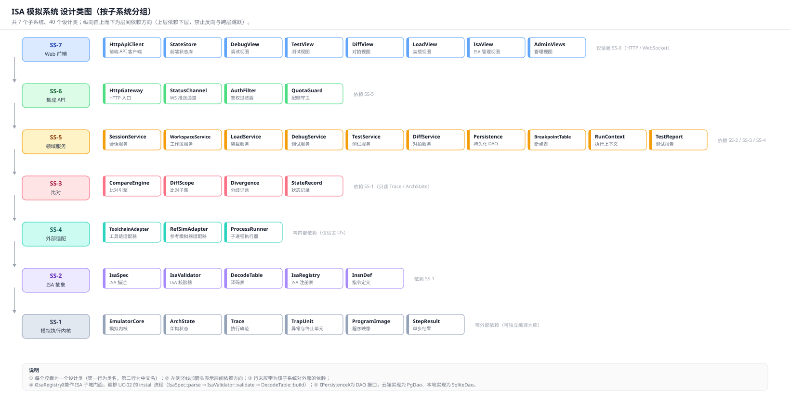
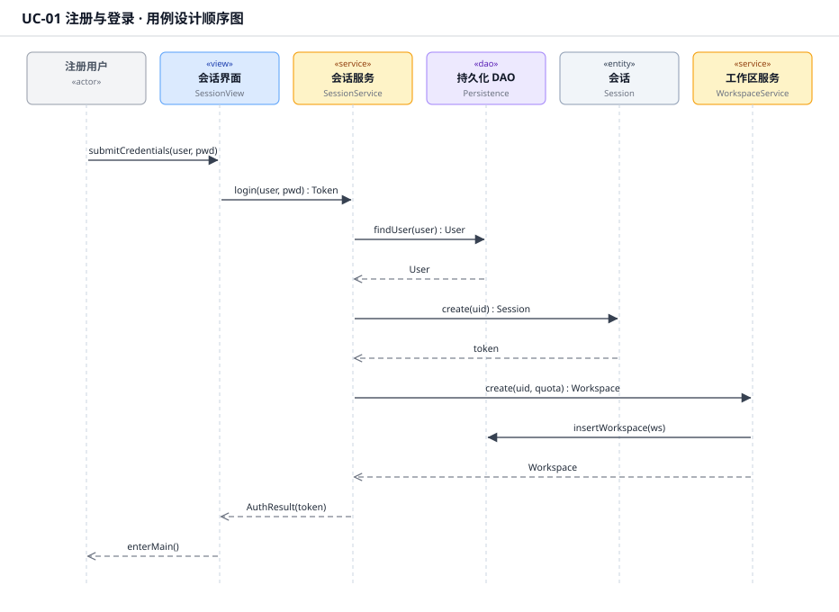
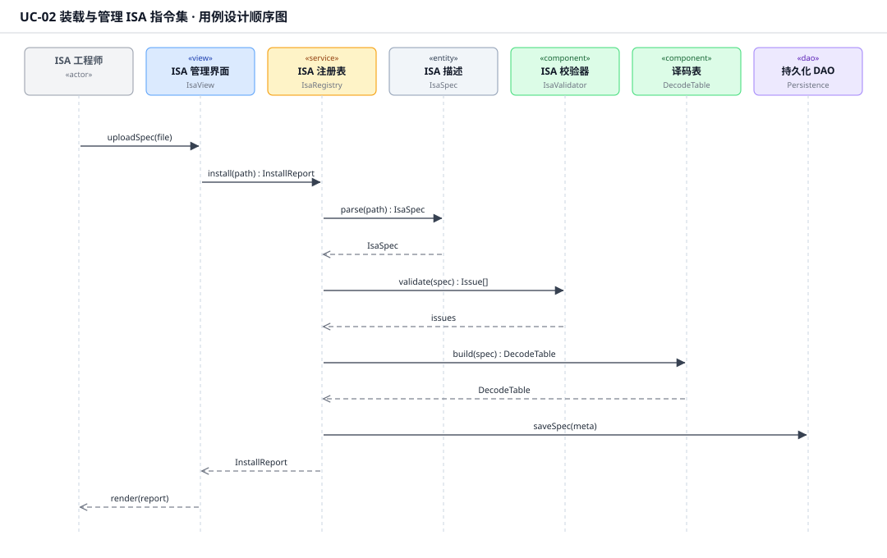
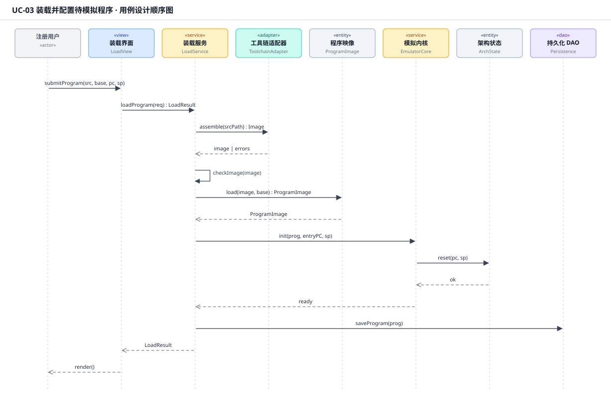
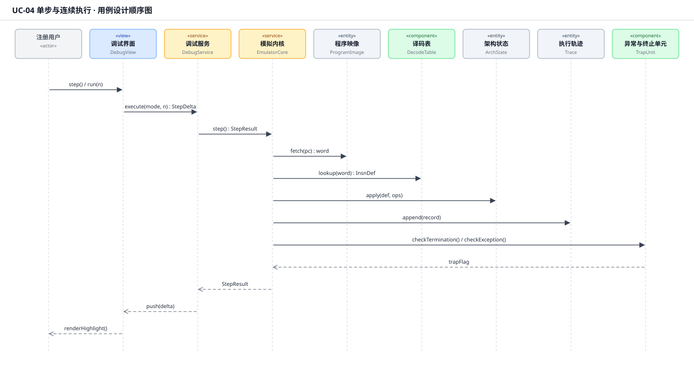
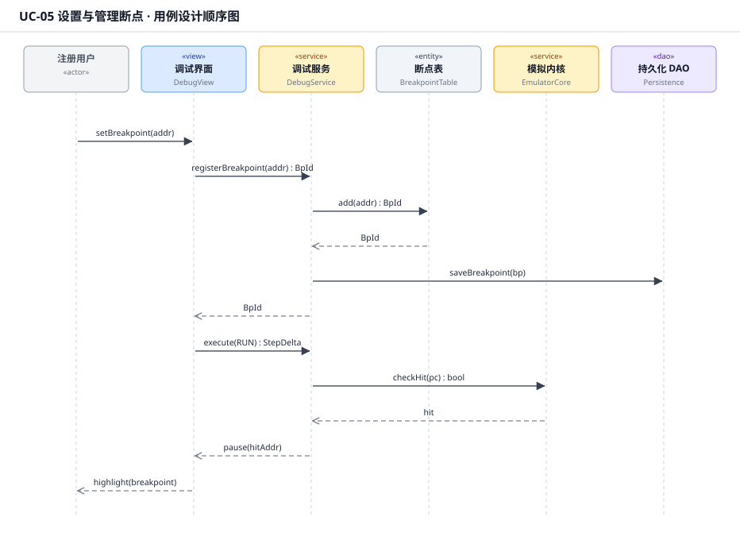
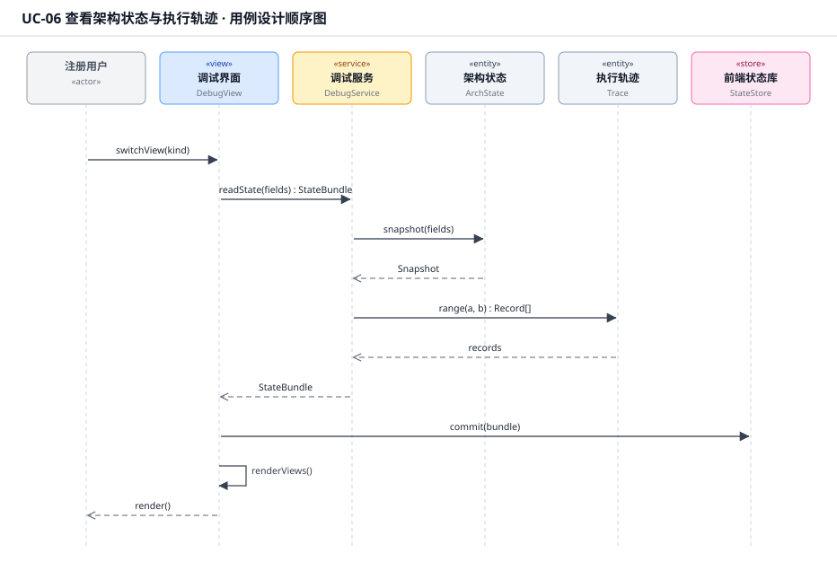
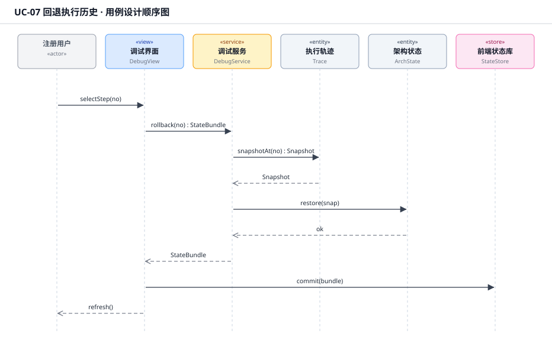
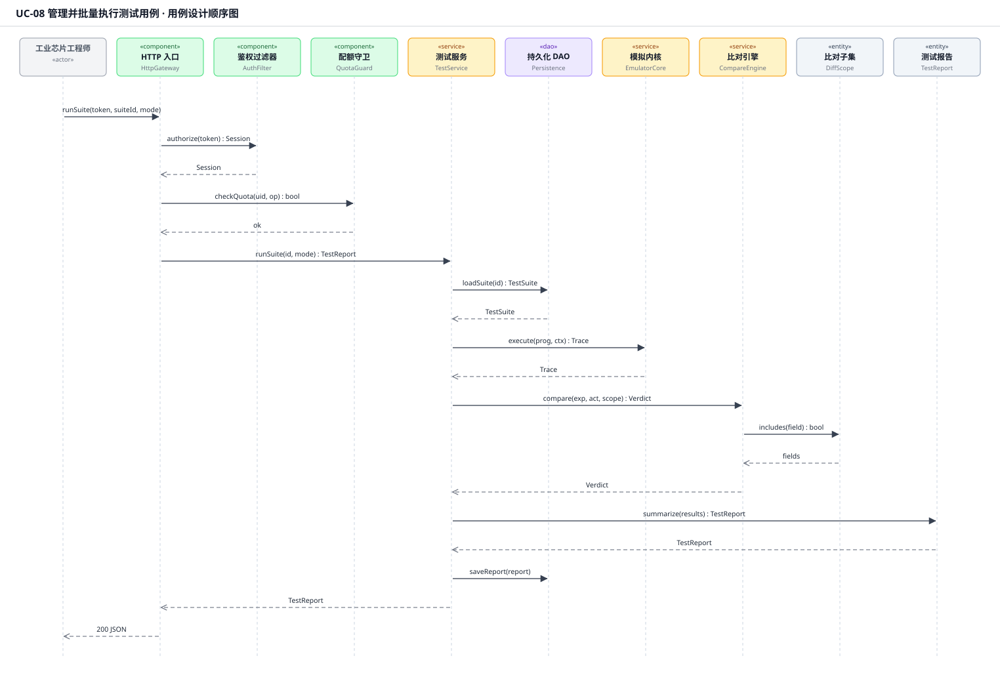
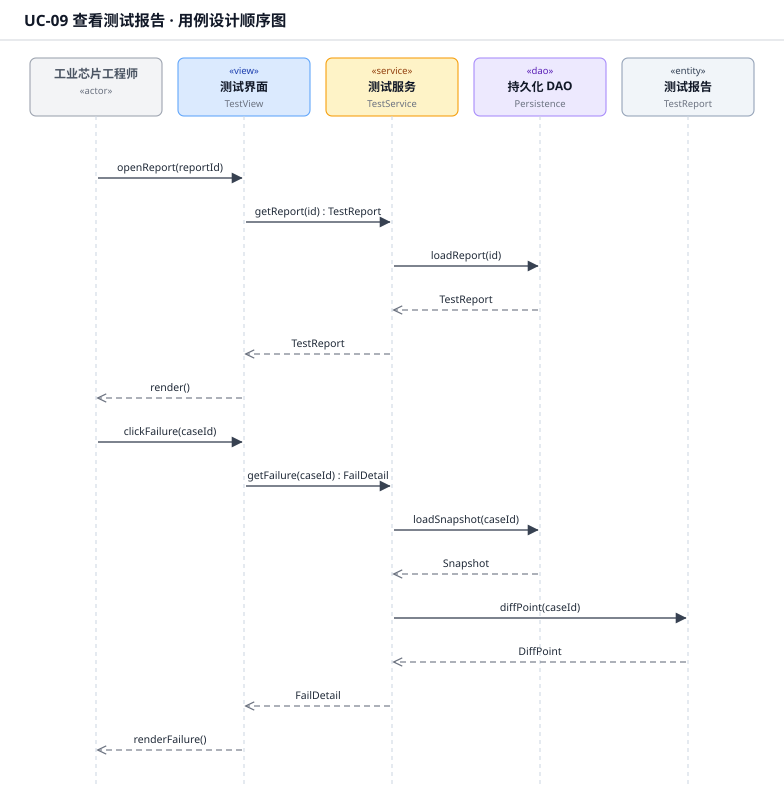
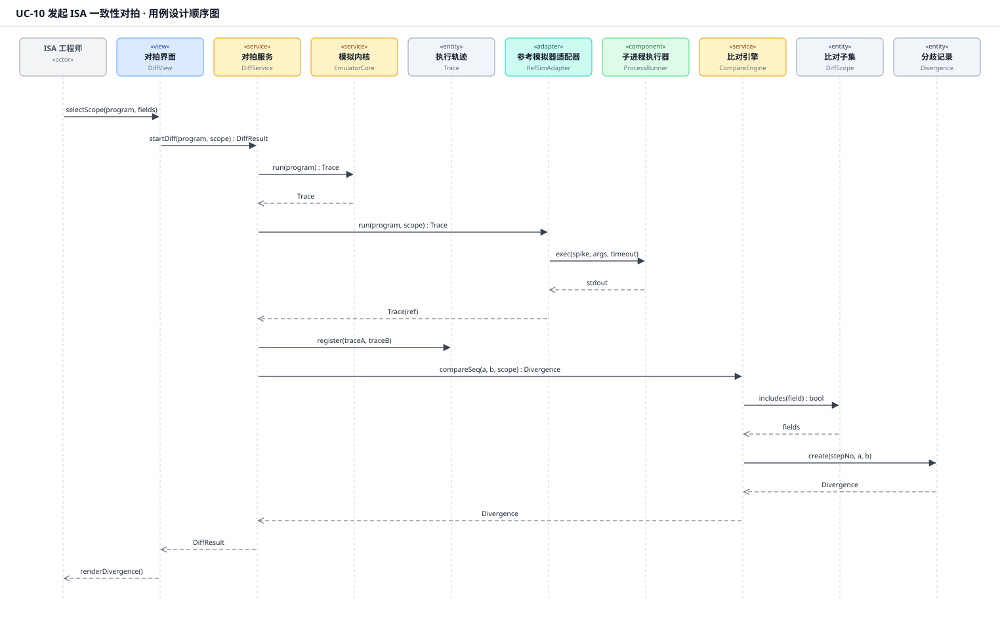
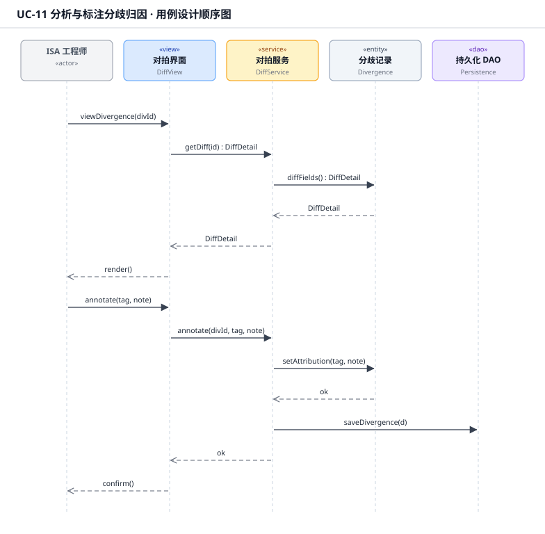
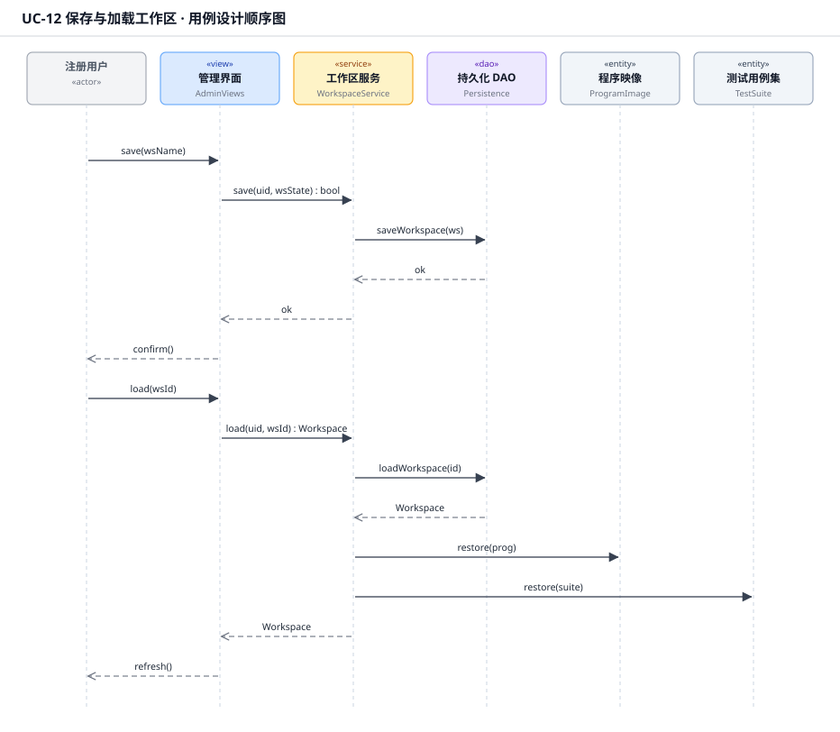
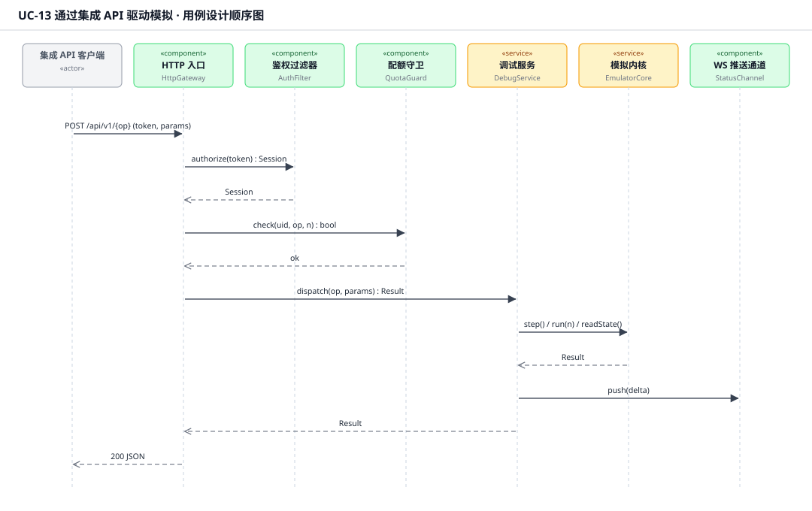
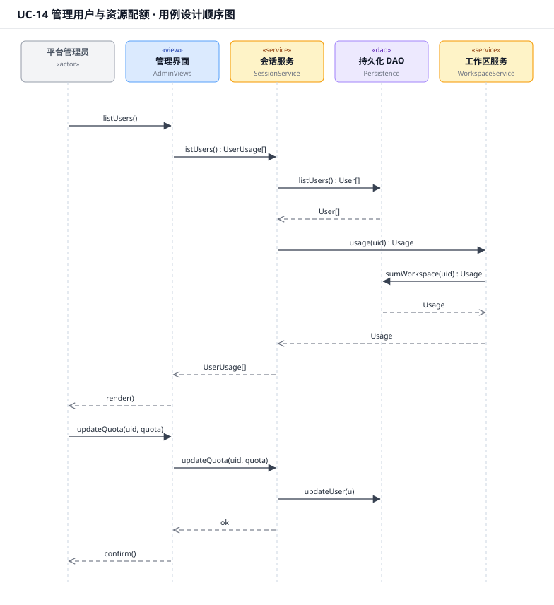
| 文件 | 内容 | 规模 |
|---|---|---|
设计类图.svg | 7 子系统分组的设计类总览、层间依赖 | 40 个设计类 |
UD-01.svg | UC-01 注册与登录 | 6 生命线 / 11 消息 |
UD-02.svg | UC-02 装载与管理 ISA 指令集 | 7 / 11 |
UD-03.svg | UC-03 装载并配置待模拟程序 | 8 / 14 |
UD-04.svg | UC-04 单步与连续执行 | 9 / 12 |
UD-05.svg | UC-05 设置与管理断点 | 6 / 11 |
UD-06.svg | UC-06 查看架构状态与执行轨迹 | 6 / 10 |
UD-07.svg | UC-07 回退执行历史 | 6 / 9 |
UD-08.svg | UC-08 管理并批量执行测试用例 | 10 / 19 |
UD-09.svg | UC-09 查看测试报告 | 5 / 14 |
UD-10.svg | UC-10 发起 ISA 一致性对拍 | 10 / 17 |
UD-11.svg | UC-11 分析与标注分歧归因 | 5 / 13 |
UD-12.svg | UC-12 保存与加载工作区 | 6 / 14 |
UD-13.svg | UC-13 通过集成 API 驱动模拟 | 7 / 11 |
UD-14.svg | UC-14 管理用户与资源配额 | 5 / 15 |
设计消息说明.md | 14 个用例的逐条消息表（方法签名级） | — |
用例实现方案.md | 设计类清单、分析类转换方式、逐用例实现要点 | — |